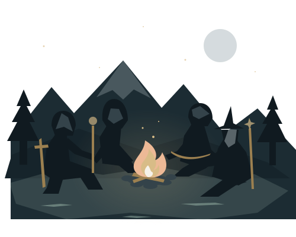

Skyrim Together Reborn
The North is
better together.
A few friends. A whole province. Find your place and share the adventure together.

What do you need?
Start with your question.
Choose the answer you need.
01 / Join
How do I join tonight?
Five steps to your party.
Join tonight's game 02 / RulesCan I use this spell or perk?
Find the ruling before trying it.
Check rules 03 / LeaveI have to leave right now.
The exit steps, whenever you need them.
Leave well 04 / RoleWhat should I play?
Six roles with room for you.
Find your role 05 / StuffWhere do I keep my things?
Personal storage needs a small test.
Check storage 06 / DifferentWhat changes from single player?
Saves, leaders, menus and death change.
Get bearingsKeep this close
Seven chapters.
Each opens on its quick answers.
01
A shared world
02What changes in multiplayer
Skills and races
03Make your character your own
Spells and magic
04Find your kind of magic
A night of adventure
05Join, play, and leave well
Unusual builds
06Bring something unexpected
Playing as a party
07Make room for everyone
What belongs to you